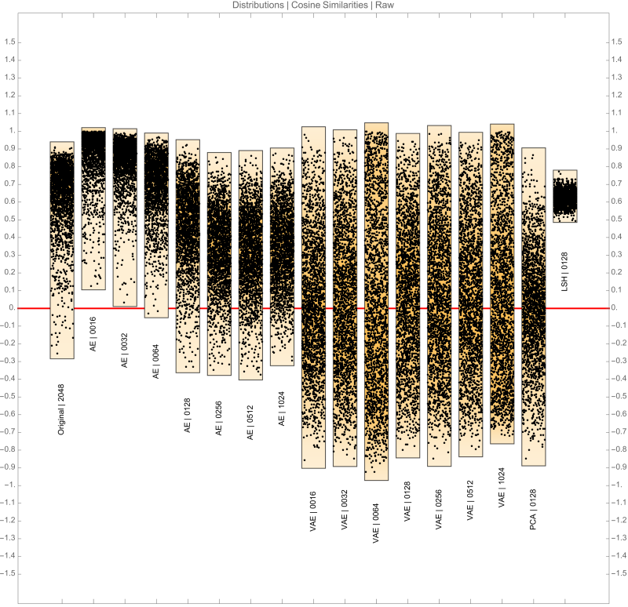
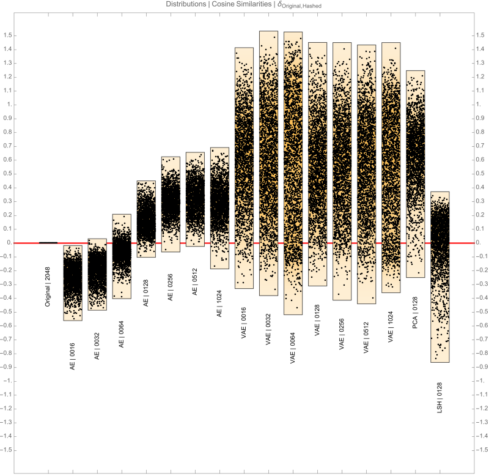
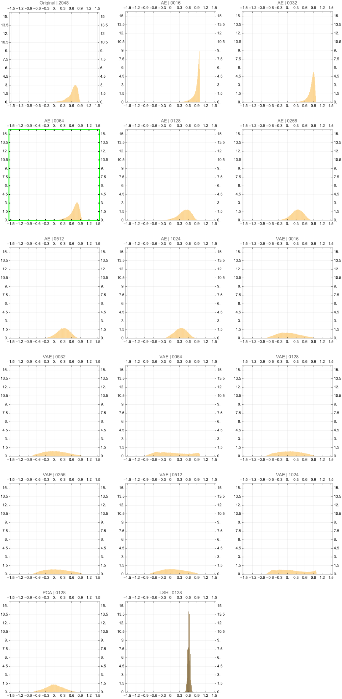

Scenario
- Was there a time you were working with excessively large vectors (or matrices)?
- And these vectors sure had rich information packed into them, but they are practically too large?
- And wish how we could use all of that rich information approximately to make it a win-win?
Exploration
- Dimensionality reduction is a common practice to use these large vectors in a practical sense.
- Why?
- Since the vectors are smaller, we need lesser processing needs
- When done well, the reduced vectors retain an identical relative similarity among the vectors
- Ability to use a highly knowledgeable vector thus making our use case very powerful
Sources
Original Vectors sourced from the model deepseek-coder-1.3b-base
model_name = "deepseek-ai/deepseek-coder-1.3b-base"
tokenizer = AutoTokenizer.from_pretrained(model_name)
model = AutoModelForCausalLM.from_pretrained(model_name)
print(f"DeepSeek-Coder model '{model_name}' and tokenizer loaded.")
Top 512 words of the english language have been encoded using the model above
How to reduce dimensions?
- There are innumerable methods to reduce dimensions for vectors, in this page we will explore the
following
- Autoencoder
- Variational Autoencoder
- Principal Component Analysis (PCA)
- Locally Sensitive Hashing (LSH)
How to determine the best candidate?
- Calculate all combinations pairwise similarities for a subset of the vectors. This exercise samples 1024 vectors
- Pick a ballpark output dimension size
- Experiment with the available algorithms and various output dimensions
- Calculate the similarities in the lower dimensional space
- Subtract the corresponding similarities pairs of higher and lower dimensions
- Plot the distributions
- Pick the method with a distribution centered normally with a mean closest to 0 and with the least variance
Keys
There are several abbreviations here and the guide below will help with the reading
- Original 2048 \(\rightarrow\) Raw vectors from the deepseek-coder-1.3b-base model
- AE 0256 \(\rightarrow\) Autoencoder with encoder output dimensions of 256
- VAE 0064 \(\rightarrow\) Variational Autoencoder with encoder output dimensions of 64
- LSH 0128\(\rightarrow\) Locally Sensitive Hashing to output vectors of dimensions 128
- PCA 0128\(\rightarrow\) Principal Component Analysis to hash vectors to dimensions 128
Observations
From the distributions below, we can observe the following in the similarity space.
- Autoencoders can (in general) represent vectors with smaller variance.
- Variational Autoencoders have relatively higher variance in comparison to Autoencoders
- LSH has the least amount of variance of all techniques
- PCA has the most symmetric mapping to the similarity space of all techniques
Victors?
- Overall, the Autoencoders have been the best contenders because they preserve the aymmetry of the base distribution of the raw vectors in the cosine-similarity space.
- Within the Autoenoders, the AA | 0064 has worked the best in this case
- That one outlined as green in the histograms grid.
Distribution Charts
 1. Base Distributions in Cosine Similarity Space
2. Difference distributions in Cosine Similarity Space
These are obtained by subtracting pairwise cosine similarities between the original and reduced dimensions. For example, a given data point would be \(a_{2048} - a_{AE\ 0064}\) where \(a_{2048}\) is the cosine similarity between a pair of words and \(a_{AE\ 0064}\) is the cosine similarity between the exact same words but with the vectors obtained from the Autoencoder having an encoder output dimensions of 64. Each distribution is made up of nearly 130,000 datapoints.